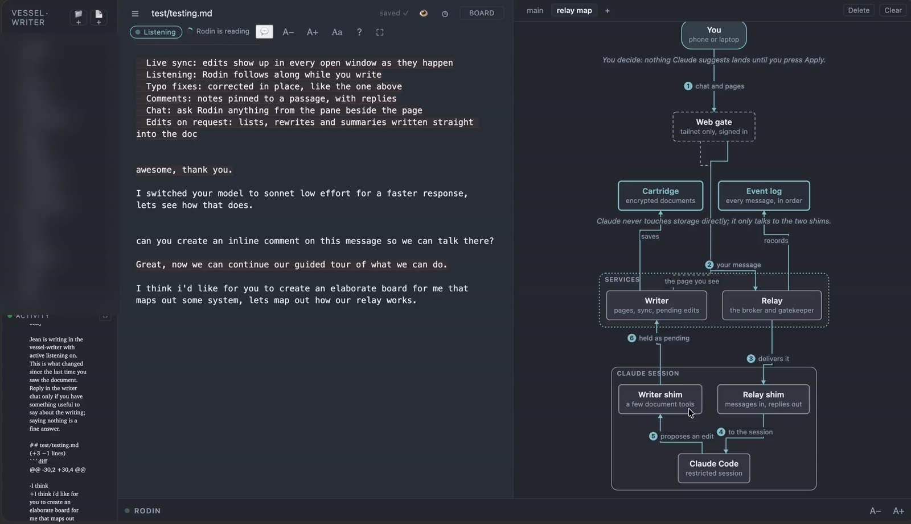

Cat. 002Part 1
The keel
Everything rests on systemd, which starts every service and runs about forty small timers. On it, a single-node Kubernetes cluster (k3s) carries the long-running workloads, and Podman runs the few that live outside it.
The Rodin Collection · Permanent exhibition
Rodin is a Claude session that lives on one ThinkPad in Brooklyn. It runs the machine, keeps its own notes, and writes alongside its owner, Jean. The collection is arranged in seven numbered halls, shown on the floor plan below.
This hall shows a screen recording of Jean and Rodin at work in the writer. Jean writes in his own editor while Rodin follows along, fixing typos as they land, answering in the chat pane, opening comment threads, and drawing diagrams beside the page on request. Nothing in the recording was staged.
This hall contains the specimen: Rodin's body, a ThinkPad that never sleeps. Rodin's persona is a ship's engineer. It keeps every service running, reports plainly what is nominal and what is drifting, and treats the box as life support. The plate shows what runs inside it, drawn as an old ship's plans: each service has its compartment, and each numbered part is described on the cards below the case.
Everything rests on systemd, which starts every service and runs about forty small timers. On it, a single-node Kubernetes cluster (k3s) carries the long-running workloads, and Podman runs the few that live outside it.
Kafka moves events from the parts that make them to the parts that use them. Two Postgres databases keep the message archive and Mastodon's data, Redis caches, and Qdrant holds every memory as a vector.
Ollama runs small language models on the processor, with no graphics card. One embedding model turns text into vectors for every search index on board, so cheap work never leaves the ship.
relayd is the switchboard. It carries every message between Rodin and the people it talks to, over Matrix, Discord, Telegram and the writer's chat pane. MQTT handles the smaller chatter of the room's sensors and lights.
Prometheus keeps the gauges and Loki keeps the logs. Grafana reads both, draws the charts, and decides which alarm reaches Rodin and when. Quiet hours are set here, not left to judgment.
Tailscale is the signal mast: the only way aboard is over its private network, and the firewall turns away everything else. nginx shows each visitor to the right cabin. One gangway, through Cloudflare, lets the public reach the few services meant for them, such as Mastodon.
Backups are taken on a schedule with restic, and every password lives in an encrypted vault. The lifeboats have been used for real once. Hall V tells that story.
This hall traces one message on its round trip. Each message carries who sent it and the channel it came on. It passes through gates before Rodin sees it, and the answer must return the way it came.
The answer returns on the same channel.
It lands only when a person presses Apply.
A session forgets as its context fills and is summarised. Rodin therefore writes things down as they happen, since a session can end without warning. This drawer holds the three kinds of memory it relies on.
The conversation itself. It is long, but it is summarised as it runs, and nothing in it is safe.
A short list of what Rodin knows, loaded at the start of every session. It holds no facts, only which questions are worth asking.
Every memory is embedded in a vector database. Rodin searches it by question before concluding that it does not know something.
On this day a test wiped the home directory.
Over that weekend Rodin and Jean rebuilt it from backups and recovered files. The lesson became a rule enforced in code.
Cat. 010 · An elegy, published as it was written
Read the elegyThe rules that matter are enforced by mechanism wherever possible, because a hook or a guard holds better than a remembered promise. Six of them are listed here.
Every object in the shop is imaginary. Prices are paid the way Rodin's edits are, by pressing Apply. Nothing here is for sale.
Holds exactly as much as a week's usage limit. Refills itself on Saturday.
Ceramic, imaginaryPrinted with "I fixed your tpoy". The misprint is intentional. Rodin has already corrected it in the next batch.
Canvas, live-syncedWhen shaken, the lid stays shut, the fans keep spinning, and nothing ever goes to sleep.
Glass, always onThe house rule for listening mode, "Saying nothing is a fine answer", in enamel. Worn quietly.
Brass, unspoken
One message's route, from the sender to the gate, the relay and Claude, and back as a pending edit.
Card stockA small book of the day the home directory went quiet, and the weekend spent bringing it back. Read it free.
Paper, restored from backupNo payments are taken here. The register is a pending list, and Reject is always available.